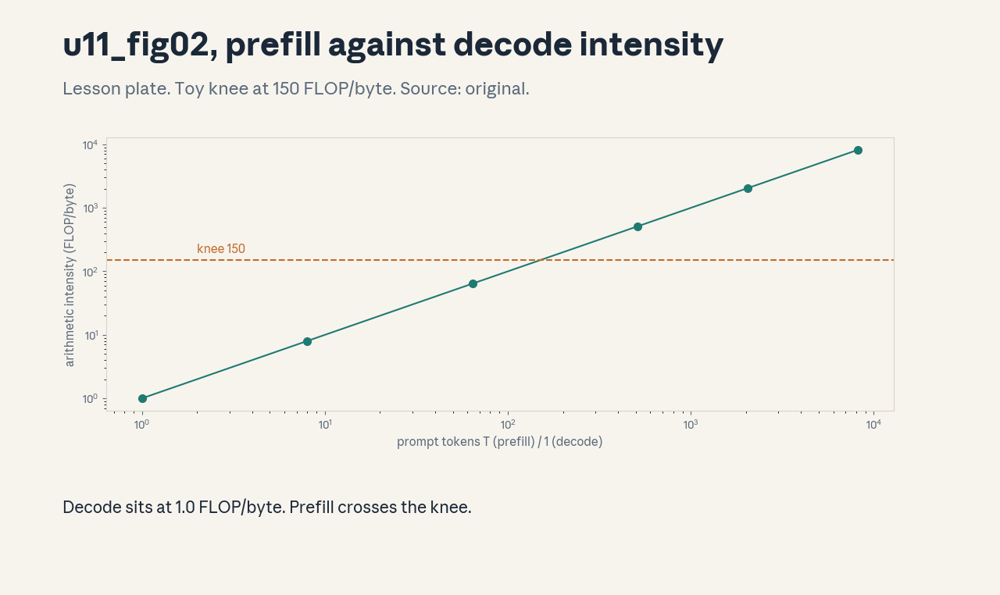
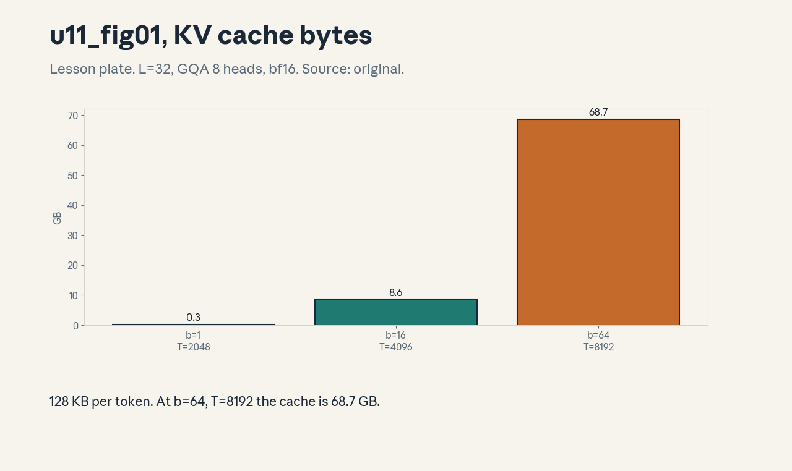
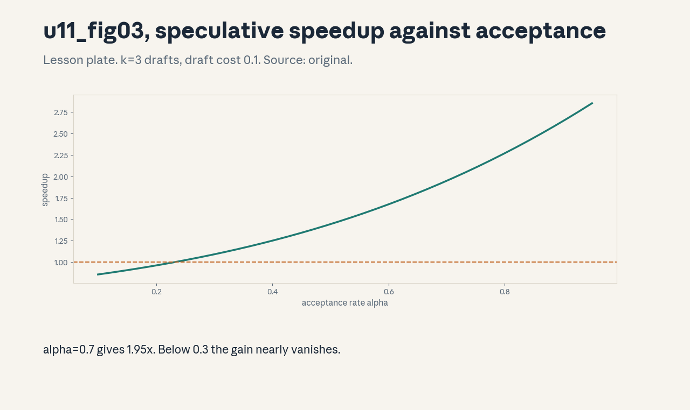

U11 · Inference algorithms and serving
U11 , Inference algorithms and serving
Prerequisites: P12, P14, P15, P16. Bridge links in ../prerequisites.md.
Session: S10 (reported Apr 29, Inference). Full session map in
../course_map.md.
Claim class: REQUESTED-BRANCH. All leaves PLANNED / SOURCE ATTRIBUTION
PENDING. Notation: see ../notation_and_shapes.md.
Standing note
No GPU on this box. Serving claims are time models and numpy
simulations, stated as such. Reference inference model: L=32,
d=4096, GQA with 8 KV heads, head dim 128, bf16. All numbers come
from assets/compute_u11.py (executed 2026-10-06) or are labeled
toy inputs.
Russian-doll map
Shells 0-1 in items 1-2, shells 2-3 in items 3-6, shell 4 in item 7, shell 5 in item 8, shell 6 in item 9, shell 7 in item 11, shell 8 in item 10, shell 9 in item 12, shell 10 in item 13(c). The depth gate is checked by item 13.
Local remediation , the two phases
Read this if diagnostic items on arithmetic intensity were not full
marks. Inference has two phases. Prefill processes the whole prompt
at once: compute-bound, like training. Decode generates one token at
a time: memory-bound, because each step re-reads all the weights.
Toy from compute_u11.py: decode intensity 1.0 FLOP/byte, prefill
at T=2048 about 2048 FLOP/byte. Every serving decision below flows
from this split. Assessment: a 7B bf16 model is 14.0 GB of weights.
how many bytes does one decode token read? Key:
../keys/u11_answers.md R1.
C01: Prefill/decode
Leaf id cs336-U11-C01. Claim class REQUESTED-BRANCH.
Status PLANNED / SOURCE ATTRIBUTION PENDING.
-
Source mapping, scope, objectives, dependencies. Branch. Scope: the two-phase structure of generation. Objectives: name the phases, state which bounds each. Depends on P12, P15.
-
Motivating question and toy. Question: why is the first token slow and the rest fast-ish but expensive? Toy from
compute_u11.py: prefill at T=2048 has intensity ~2048 FLOP/byte (compute-bound), decode sits at 1.0 FLOP/byte (memory-bound), one decode token reads 14.0 GB of weights. -
Mental model. Prefill is a wide matmul: the weights are read once and reused across T tokens. Decode is a skinny matvec: the weights are read once per token. Same weights, opposite bottlenecks.
-
Objects, symbols, units, shapes, assumptions. TTFT: time to first token. TPOT: time per output token. Assumption: batch 1, the reference model, bf16.
-
Derivation / mechanism. Decode FLOPs per token ~ 2N, bytes read ~ 2N: intensity ~1 FLOP/byte. Prefill reuses each weight read across T positions: intensity ~T. The roofline knee decides which side each phase lands on.
-
Computed example. From
assets/compute_u11.py(executed 2026-10-06): 1.0 vs ~2048 FLOP/byte, 14.0 GB per decode token. -
Algorithm and reference implementation.
phase_ai(T): return max(1.0, float(T)). Three lines. -
Correctness checks and expected output. T=1 gives 1.0 (decode). T=2048 gives 2048. Monotone in T.
-
Costs. The toy ignores attention FLOPs in prefill (O(T^2)) and the KV write cost. At long T, prefill attention dominates.
-
Nearest alternative and selection boundary. Chunked prefill (split long prompts into pieces) when prefill latency spikes. Plain prefill otherwise.
-
Failure case and counterexample. Batch 64 at T=8192: the KV cache alone is 68.7 GB and decode stops being a pure weight-read story. The assumption “decode reads only weights” breaks, cache traffic joins the bottleneck.
-
Research reading and falsifiable extension. Reading: the Orca paper on continuous batching (Yu et al., 2022, primary). Extension: sweep T in the toy from 1 to 8192, hypothesis: the knee crossing predicts the latency regime change.
-
Assessment. (a) Recall: the two phases and their bounds. (b) Oral ladder: define the phases, compute the toy, justify the 1.0, implement
phase_ai, compare with chunked prefill, debug the batch-64 case, critique the T-only model, design the T sweep. (c) Transfer: T=128k prompt. Which phase dominates total latency and why? Answers:../keys/u11_answers.mdA1. -
Lab and exercises. Lab U11 task 1 models the phases. See
../labs/u11_lab.md. -
Visuals. Figure u11_fig02: intensity against T with the knee. Source: original. Render:
assets/render_u11.py.

C02: KV append and memory
Leaf id cs336-U11-C02. Claim class REQUESTED-BRANCH.
Status PLANNED / SOURCE ATTRIBUTION PENDING.
-
Source mapping, scope, objectives, dependencies. Branch. Scope: the KV cache, its growth, its bytes. Objectives: compute per-token and per-batch cache bytes. Depends on C01, P14.
-
Motivating question and toy. Question: where does the memory go during a long generation? Toy from
compute_u11.py: 128.0 KB per token, batch 1 at T=2048 needs 0.27 GB, batch 16 at T=4096 needs 8.59 GB, batch 64 at T=8192 needs 68.72 GB. -
Mental model. Each decode step appends one K and one V vector per layer per head. The cache grows linearly in tokens. It is the price of never recomputing attention over the past.
-
Objects, symbols, units, shapes, assumptions. Per-token bytes = 2 * L * h_kv * d_h * bytes_per. Assumption: GQA with 8 KV heads, bf16, no sharing.
-
Derivation / mechanism. 2 (K and V) x 32 layers x 8 heads x 128 dims x 2 bytes = 131,072 bytes per token. Multiply by batch and sequence length.
-
Computed example. From
assets/compute_u11.py(executed 2026-10-06): 128.0 KB/token. 0.27, 8.59, 68.72 GB for the three (batch, T) pairs. -
Algorithm and reference implementation.
kv_bytes(b, T): return 2Lh_kvdh2bT. Three lines. -
Correctness checks and expected output. b=1, T=1 gives 131,072. Doubling b or T doubles the result.
-
Costs. The cache competes with weights and activations for HBM. At 68.7 GB it exceeds the 14 GB weights by 5x.
-
Nearest alternative and selection boundary. Recompute K/V from scratch each step (no cache, quadratic cost). Cache always wins past a few dozen tokens.
-
Failure case and counterexample. GQA assumed: with full MHA (32 KV heads) the per-token cost is 512 KB, 4x more, and the batch-16 case jumps to 34 GB. The assumption “8 KV heads” breaks per architecture, recompute per model.
-
Research reading and falsifiable extension. Reading: the GQA paper (Ainslie et al., 2023, primary). Extension: sweep h_kv in the toy, hypothesis: cache bytes scale linearly in h_kv with slope 16 KB per head per token.
-
Assessment. (a) Recall: the per-token formula. (b) Oral ladder: define the cache, compute the three toys, justify the factor 2, implement
kv_bytes, compare with recompute, debug the MHA case, critique the no-sharing assumption, design the h_kv sweep. (c) Transfer: a 70B model with L=80, h_kv=8, d=8192 (dh=128), batch 8, T=4096. Compute the cache. Answers:../keys/u11_answers.mdA2. -
Lab and exercises. Lab U11 task 2 computes cache sizes. See
../labs/u11_lab.md. -
Visuals. Figure u11_fig01: cache bytes across the three cases. Source: original. Render:
assets/render_u11.py.

C03: Cache sharing
Leaf id cs336-U11-C03. Claim class REQUESTED-BRANCH.
Status PLANNED / SOURCE ATTRIBUTION PENDING.
-
Source mapping, scope, objectives, dependencies. Branch. Scope: sharing KV blocks across requests with common prefixes. Objectives: compute the memory saved by sharing, state when it applies. Depends on C02.
-
Motivating question and toy. Question: ten requests share a 2000-token system prompt. Do you store it ten times? Toy: 10 x 2000 x 128 KB = 2.62 GB unshared, shared once = 0.26 GB. Saving: 2.36 GB.
-
Mental model. The prefix K/V depends only on the prefix tokens, not on who asked. Store it once, point every request at it. Sharing is a memory optimization with zero quality change.
-
Objects, symbols, units, shapes, assumptions. Shared bytes = prefix_tokens x per_token. Assumption: identical prefix token sequences, same model.
-
Derivation / mechanism. K/V are deterministic functions of the input tokens (no sampling inside). Identical inputs give identical cache blocks, so one copy serves all readers.
-
Computed example. From the formula with the C02 per-token value (128 KB): unshared 2.62 GB, shared 0.26 GB, saving 2.36 GB.
-
Algorithm and reference implementation. Hash the prefix token sequence, look up the block, attach on hit. About 10 lines of pseudocode.
-
Correctness checks and expected output. Outputs identical to unshared generation token-for-token. A hash miss falls back to compute the prefix.
-
Costs. Reference counting and eviction: a shared block cannot be freed while any request reads it. The bookkeeping is small, the bug surface is real.
-
Nearest alternative and selection boundary. Prompt caching at the API layer (coarser, survives across connections). In-engine sharing for live requests.
-
Failure case and counterexample. Prefixes that differ by one token share nothing: the hash is all-or-nothing. The assumption “prefixes match” breaks with per-user system prompts, and sharing saves zero.
-
Research reading and falsifiable extension. Reading: the vLLM paper on paged attention (Kwon et al., 2023, primary). Extension: measure hit rate against prefix-length distribution on a synthetic workload, hypothesis: hit rate rises steeply past 512 shared tokens.
-
Assessment. (a) Recall: why sharing is exact. (b) Oral ladder: define sharing, compute the toy, justify determinism, sketch the lookup, compare with API caching, debug the one-token-difference case, critique the hash granularity, design the hit-rate test. (c) Transfer: 100 requests, prefixes of length 100, 500, 2000 in thirds. Compute the saving. Answers:
../keys/u11_answers.mdA3. -
Lab and exercises. Lab U11 task 3 computes sharing savings. See
../labs/u11_lab.md. -
Visuals. No dedicated figure, the saving is one subtraction. No unresolved conflict.
C04: Continuous batching
Leaf id cs336-U11-C04. Claim class REQUESTED-BRANCH.
Status PLANNED / SOURCE ATTRIBUTION PENDING.
-
Source mapping, scope, objectives, dependencies. Branch. Scope: replacing static batches with iteration-level scheduling. Objectives: explain the idle-time saving, compute it on a toy. Depends on C01.
-
Motivating question and toy. Question: four requests take 100, 400, 250, 800 steps. Static batching waits 800 steps for all. Toy from
compute_u11.py: continuous batching with 2 slots finishes the same token count in 775 steps of slot-time against 800 steps of wall time for the static batch, and new requests start immediately instead of waiting for the batch. -
Mental model. Static batching is a bus that waits for every passenger. Continuous batching is a taxi rank: a finished request leaves, a new one takes its slot at the next iteration. No slot idles while work waits.
-
Objects, symbols, units, shapes, assumptions. Slots: max concurrent requests. Assumption: 2 slots, the four toy lengths, prefill cost ignored.
-
Derivation / mechanism. At each decode iteration, evict finished sequences and insert waiting ones (after their prefill). Slot utilization stays near 100 percent whenever the queue is nonempty.
-
Computed example. From
assets/compute_u11.py(executed 2026-10-06): static 800 steps wall, continuous 775 slot-steps over 2 slots. -
Algorithm and reference implementation. The scheduler loop: run one iteration, evict finished, prefill and insert from the queue while slots and memory allow. About 15 lines of pseudocode.
-
Correctness checks and expected output. Total tokens generated equal the static run. No request starts before its prefill completes.
-
Costs. Prefill of an inserted request stalls the decode batch for one iteration (the prefill/decode interference). Chunked prefill (C01) bounds the stall.
-
Nearest alternative and selection boundary. Static batching (simple, wastes the tail). Continuous batching wins whenever request lengths vary, which is always.
-
Failure case and counterexample. All requests arrive at once with identical length: continuous batching gains nothing over static. The assumption “lengths vary” breaks, and the extra scheduler complexity buys zero.
-
Research reading and falsifiable extension. Reading: the Orca paper (Yu et al., 2022, primary). Extension: sweep the length variance on a synthetic workload, hypothesis: gain grows with the coefficient of variation.
-
Assessment. (a) Recall: the slot mechanism. (b) Oral ladder: define continuous batching, compute the toy, justify the eviction rule, sketch the loop, compare with static, debug the equal-length case, critique the ignored prefill, design the variance sweep. (c) Transfer: 8 slots, Poisson arrivals, mean length 300. Name the metric that decides if batching helps. Answers:
../keys/u11_answers.mdA4. -
Lab and exercises. Lab U11 task 4 simulates the scheduler. See
../labs/u11_lab.md. -
Visuals. No dedicated figure, the schedule is a lab simulation. No unresolved conflict.
C05: Paged cache as bridge
Leaf id cs336-U11-C05. Claim class REQUESTED-BRANCH.
Status PLANNED / SOURCE ATTRIBUTION PENDING.
-
Source mapping, scope, objectives, dependencies. Branch. Scope: block-paged KV storage. Objectives: compute the fragmentation waste with and without paging. Depends on C02, P15.
-
Motivating question and toy. Question: requests have different lengths, contiguous allocation wastes the gaps. Toy from
compute_u11.pyon lengths [512, 2048, 4096, 1024, 3072, 1536]: contiguous waste 50.0 percent, paged waste with block 16 is 0.0 percent (all lengths are multiples of 16 here). -
Mental model. Operating-system paging for the KV cache: split each sequence into fixed blocks, allocate blocks on demand, translate logical position to physical block. Waste drops to less than one block per sequence.
-
Objects, symbols, units, shapes, assumptions. Block size: 16 tokens. Assumption: the toy length set, block table overhead ignored.
-
Derivation / mechanism. Contiguous reserves max length per slot: waste = (maxTn - sum)/ (maxTn). Paged reserves ceil(len/16) blocks: waste < 16 tokens per sequence.
-
Computed example. From
assets/compute_u11.py(executed 2026-10-06): 50.0 percent vs 0.0 percent on the toy. -
Algorithm and reference implementation. Block table per sequence, allocator with a free list, attention kernel reads through the table. About 20 lines of pseudocode.
-
Correctness checks and expected output. Attention output identical to contiguous layout. No block leaks after eviction.
-
Costs. The attention kernel must gather through the block table: extra indirection per memory access. Block size trades waste against table size.
-
Nearest alternative and selection boundary. Contiguous cache (simple, wastes half the memory on varied lengths). Paging wins whenever lengths vary.
-
Failure case and counterexample. Block size 4096 with 100-token requests: internal fragmentation returns and paging saves nothing. The assumption “block << length” breaks, size blocks to the workload.
-
Research reading and falsifiable extension. Reading: the vLLM paper (Kwon et al., 2023, primary). Extension: sweep block size on the toy lengths, hypothesis: waste rises in steps at multiples of the gcd of the lengths.
-
Assessment. (a) Recall: the block-table mechanism. (b) Oral ladder: define paging, compute the toy, justify the waste bound, sketch the allocator, compare with contiguous, debug the giant-block case, critique the ignored overhead, design the block sweep. (c) Transfer: lengths uniform at 2048, block 16. Compute both wastes. Answers:
../keys/u11_answers.mdA5. -
Lab and exercises. Lab U11 task 5 computes waste. See
../labs/u11_lab.md. -
Visuals. No dedicated figure, the waste comparison is a two-bar table in the lab key. No unresolved conflict.
C06: Speculative draft/verify
Leaf id cs336-U11-C06. Claim class REQUESTED-BRANCH.
Status PLANNED / SOURCE ATTRIBUTION PENDING.
-
Source mapping, scope, objectives, dependencies. Branch. Scope: draft-model speculation with target verification. Objectives: compute expected tokens per step and the speedup from the acceptance rate. Depends on C01.
-
Motivating question and toy. Question: a small model guesses 3 tokens, the big model checks them in one pass. When does this win? Toy from
compute_u11.py: alpha = 0.7, k = 3 gives E = 2.53 tokens per verify step, with draft cost 0.1 the speedup is 1.95x. -
Mental model. The draft model proposes, the target model disposes in a single parallel verify. Accepted tokens are free, a rejection costs the draft work but still yields the corrected token. Throughput follows the acceptance rate.
-
Objects, symbols, units, shapes, assumptions. alpha: per-token acceptance probability. k: draft length. Assumption: independent acceptances, draft cost 0.1 of target.
-
Derivation / mechanism. Expected accepted run length for k drafts: E = (1 - alpha^{k+1})/(1 - alpha). Cost per step = k*c_draft + 1. Speedup = E / cost.
-
Computed example. From
assets/compute_u11.py(executed 2026-10-06): alpha 0.7 -> 1.95x. 0.3 -> 1.09x. 0.5 -> 1.44x. 0.9 -> 2.65x. -
Algorithm and reference implementation. Draft k tokens, one target forward on the k+1 prefixes, accept the longest matching prefix, sample one more. About 15 lines of pseudocode.
-
Correctness checks and expected output. With the exact acceptance rule the output distribution matches the target alone (C07). E is monotone in alpha.
-
Costs. Draft forwards cost memory bandwidth too. k too large wastes draft work on likely rejections.
-
Nearest alternative and selection boundary. Medusa-style multi-head drafts (no separate model, needs training). Draft/verify when a small aligned model exists.
-
Failure case and counterexample. Draft and target disagree on style (different fine-tunes): alpha collapses to 0.2 and the speedup falls below 1. The assumption “draft approximates target” breaks, align the draft or drop the scheme.
-
Research reading and falsifiable extension. Reading: the speculative decoding papers (Leviathan et al., 2023. Chen et al., 2023, primary). Extension: sweep k at fixed alpha on the toy, hypothesis: optimal k grows with alpha.
-
Assessment. (a) Recall: the E formula. (b) Oral ladder: define the scheme, compute the toy, derive E, sketch the loop, compare with Medusa, debug the style- mismatch case, critique the independence assumption, design the k sweep. (c) Transfer: alpha = 0.85, k = 5, draft cost 0.2. Compute the speedup and judge. Answers:
../keys/u11_answers.mdA6. -
Lab and exercises. Lab U11 task 6 computes speedups. See
../labs/u11_lab.md. -
Visuals. Figure u11_fig03: speedup against alpha. Source: original. Render:
assets/render_u11.py.

C07: Exact-distribution conditions
Leaf id cs336-U11-C07. Claim class REQUESTED-BRANCH.
Status PLANNED / SOURCE ATTRIBUTION PENDING.
-
Source mapping, scope, objectives, dependencies. Branch. Scope: when speculation preserves the target distribution. Objectives: state the acceptance rule that keeps sampling exact. Depends on C06, P06.
-
Motivating question and toy. Question: if the draft is wrong half the time, does the output still match the big model? Yes, with the right acceptance rule: accept token x with probability min(1, p_target(x)/p_draft(x)), else resample from the adjusted distribution.
-
Mental model. Rejection sampling: the draft proposes, the target corrects. The acceptance probability exactly compensates the proposal bias. The output law equals the target law, token by token.
-
Objects, symbols, units, shapes, assumptions. p, q: target and draft distributions over the vocabulary. Assumption: both assign nonzero mass where the other does (support overlap).
-
Derivation / mechanism. Standard rejection sampling: the accepted-plus-resampled mixture equals p. On rejection, sample from norm(max(0, p - q)). The chain produces p exactly.
-
Computed example. Toy: p = [0.7, 0.3], q = [0.5, 0.5]. Token 1 accepted with min(1, 1.4) = 1.0, token 2 with min(1, 0.6) = 0.6. The mixture recovers p.
-
Algorithm and reference implementation. The accept/resample step on two toy distributions. About 10 lines.
-
Correctness checks and expected output. Empirical token frequencies from the sampler match p within sampling noise. Acceptance rate equals the expected value.
-
Costs. Exactness costs the resampling branch and the extra distribution arithmetic. Approximate acceptance (always take the draft) is cheaper and wrong.
-
Nearest alternative and selection boundary. Greedy acceptance (fast, changes the distribution). Exact rule when the evaluation scores the target’s distribution.
-
Failure case and counterexample. Draft with zero mass on a token the target can emit: the support assumption breaks and exactness fails. The fix is a draft with full support (temperature > 0).
-
Research reading and falsifiable extension. Reading: the speculative sampling paper (Leviathan et al., 2023, primary). Extension: simulate the sampler on the toy p/q for 100k draws, hypothesis: chi-square against p passes.
-
Assessment. (a) Recall: the acceptance rule. (b) Oral ladder: define exactness, compute the toy, derive the rule, implement the sampler, compare with greedy, debug the zero-support case, critique the independence assumption, design the chi-square test. (c) Transfer: draft temperature 0 (greedy). Can the scheme stay exact? Answers:
../keys/u11_answers.mdA7. -
Lab and exercises. Lab U11 task 7 simulates acceptance. See
../labs/u11_lab.md. -
Visuals. No dedicated figure, the rule is one formula. No unresolved conflict.
C08: Sampling controls
Leaf id cs336-U11-C08. Claim class REQUESTED-BRANCH.
Status PLANNED / SOURCE ATTRIBUTION PENDING.
-
Source mapping, scope, objectives, dependencies. Branch. Scope: temperature, top-p, top-k. Objectives: compute how each reshapes a toy distribution. Depends on P06.
-
Motivating question and toy. Question: logits [3, 2, 1, 0]: what does temperature do? Toy from
compute_u11.py: temp 0.5 -> top-1 prob 0.865, entropy 0.66 bits, temp 1.0 -> 0.644, 1.37 bits, temp 2.0 -> 0.455, 1.80 bits. Top-p 0.9 keeps 3 of 4 tokens. -
Mental model. Temperature divides the logits: low temp sharpens, high temp flattens. Top-p keeps the smallest set with cumulative mass p. Top-k keeps k tokens. All three trade diversity against focus.
-
Objects, symbols, units, shapes, assumptions. Entropy in bits. Assumption: the 4-token toy, sorted logits.
-
Derivation / mechanism. p_i = softmax(z_i / T). As T -> 0, p concentrates on the argmax, as T -> infinity, p flattens to uniform. Top-p truncates and renormalizes.
-
Computed example. From
assets/compute_u11.py(executed 2026-10-06): the three temperature rows and the top-p count. -
Algorithm and reference implementation.
sample_params: apply temperature, sort, truncate by top-p or top-k, renormalize. About 12 lines. -
Correctness checks and expected output. T=1, p=1.0, k=inf reproduces the plain softmax. Probabilities sum to 1 after truncation.
-
Costs. Truncation discards tail mass that sometimes holds the right answer. Temperature 0 kills diversity and exploration.
-
Nearest alternative and selection boundary. Beam search (deterministic, expensive) for exact-ish decoding. Sampling for diversity and for pass@k metrics.
-
Failure case and counterexample. Top-p 0.9 on a flat distribution keeps nearly everything: the control does nothing. The assumption “the head holds the mass” breaks on high-entropy steps.
-
Research reading and falsifiable extension. Reading: the nucleus sampling paper (Holtzman et al., 2020, primary). Extension: sweep T on the toy and plot entropy, hypothesis: entropy is monotone in T.
-
Assessment. (a) Recall: the three controls and their effects. (b) Oral ladder: define each, compute the toy, justify the T limits, implement
sample_params, compare with beam search, debug the flat-distribution case, critique the fixed-p choice, design the entropy sweep. (c) Transfer: eval uses pass@100. Choose the sampling settings and defend. Answers:../keys/u11_answers.mdA8. -
Lab and exercises. Lab U11 task 8 applies the controls. See
../labs/u11_lab.md. -
Visuals. No dedicated figure, the table is in the lab key. No unresolved conflict.
C09: Prefix reuse
Leaf id cs336-U11-C09. Claim class REQUESTED-BRANCH.
Status PLANNED / SOURCE ATTRIBUTION PENDING.
-
Source mapping, scope, objectives, dependencies. Branch. Scope: reusing computed prefixes across requests and turns. Objectives: compute the prefill work saved, state the invalidation rules. Depends on C03.
-
Motivating question and toy. Question: a chat session sends the full history every turn. Must the prefill redo it all? No: with the prefix cache, turn n reuses turns 1..n-1 and prefills only the new tokens. Toy: history 1500 tokens, new turn 100: prefill work falls from 1600 to 100 token-equivalents.
-
Mental model. The KV cache is a function of the token sequence. Extend the sequence, extend the cache. Identical prefixes share cache blocks (C03), growing prefixes append to them.
-
Objects, symbols, units, shapes, assumptions. Saved work in token-equivalents. Assumption: the conversation template is fixed, so token sequences match exactly.
-
Derivation / mechanism. Prefill cost is roughly quadratic in the new tokens only when the prefix cache hits. Without the cache, each turn repays the full history.
-
Computed example. From the C03 per-token value: 1500 cached tokens save 1500 x 128 KB = 192 MB of recompute traffic per turn, plus the attention FLOPs.
-
Algorithm and reference implementation. Session store maps session id to its cache blocks, on a new turn, verify the prefix hash, append. About 10 lines of pseudocode.
-
Correctness checks and expected output. Turn outputs match the no-cache run. A template change invalidates the cache.
-
Costs. Storing per-session caches costs memory between turns. Eviction policy decides the hit rate.
-
Nearest alternative and selection boundary. Stateless resend (simple, pays prefill every turn). Session cache when turns are frequent.
-
Failure case and counterexample. The template version changes mid-session: token sequences shift and the cache is silently wrong if the hash ignores the template. The assumption “template fixed” breaks, version the cache key.
-
Research reading and falsifiable extension. Reading: the vLLM prefix-caching work (primary). Extension: simulate session arrivals with a synthetic length model, hypothesis: hit rate saturates with cache size.
-
Assessment. (a) Recall: the append rule. (b) Oral ladder: define reuse, compute the toy, justify the hash check, sketch the session store, compare with stateless, debug the template-change case, critique the memory cost, design the arrival simulation. (c) Transfer: 10k concurrent sessions, average history 800 tokens. Size the cache. Answers:
../keys/u11_answers.mdA9. -
Lab and exercises. Lab U11 task 9 computes reuse. See
../labs/u11_lab.md. -
Visuals. No dedicated figure. No unresolved conflict.
C10: Quantization/distillation
Leaf id cs336-U11-C10. Claim class REQUESTED-BRANCH.
Status PLANNED / SOURCE ATTRIBUTION PENDING.
-
Source mapping, scope, objectives, dependencies. Branch. Scope: shrinking the serving artifact. Objectives: compute the memory saved by quantization, state the quality-evaluation duty. Depends on C01, P12.
-
Motivating question and toy. Question: the 7B model needs 14.0 GB in fp16. What do int8 and int4 buy? Toy from
compute_u11.py: int8 7.0 GB, int4 3.50 GB. The quality delta is not computed here: it must be measured on evals (U12), never assumed. -
Mental model. Quantization stores weights in fewer bits. the matmul may dequantize on the fly or compute in low precision. Distillation trains a small student on a big teacher’s outputs: a different, smaller model, not a compressed one.
-
Objects, symbols, units, shapes, assumptions. Bytes per param: 2, 1, 0.5. Assumption: uniform quantization, no quality claim.
-
Derivation / mechanism. Memory = N x bytes-per-param. Halving the bits halves the weight traffic per decode token, which is the decode bottleneck (C01).
-
Computed example. From
assets/compute_u11.py(executed 2026-10-06): 14.0, 7.0, 3.50 GB. -
Algorithm and reference implementation.
quant_mem(N, bits): return N * bits / 8. Two lines. -
Correctness checks and expected output. bits=16 returns 14.0 GB for 7B. The ratio int8/fp16 is exactly 0.5.
-
Costs. Quality risk concentrates in outliers and at small scales. Calibration data and evals (U12) are the real cost.
-
Nearest alternative and selection boundary. Distillation (new small model, needs teacher outputs and training). Quantization (same model, needs evals) for fast wins.
-
Failure case and counterexample. Per-tensor int4 on a model with large activation outliers: quality collapses on math tasks while prose looks fine. The assumption “quality holds” breaks, evaluate per capability slice (U12-C10).
-
Research reading and falsifiable extension. Reading: the GPTQ paper (Frantar et al., 2023, primary). Extension: register a quality band before quantizing the toy (C10 of U10), hypothesis: the measured delta lands inside.
-
Assessment. (a) Recall: the memory numbers and the eval duty. (b) Oral ladder: define both techniques, compute the toy, justify the decode win, implement
quant_mem, compare with distillation, debug the outlier case, critique the uniform assumption, design the preregistered eval. (c) Transfer: 70B must fit one 80 GB card. Choose bits and name the evals. Answers:../keys/u11_answers.mdA10. -
Lab and exercises. Lab U11 task 10 computes the footprints. See
../labs/u11_lab.md. -
Visuals. No dedicated figure. No unresolved conflict.
C11: TTFT/TPOT/tail latency
Leaf id cs336-U11-C11. Claim class REQUESTED-BRANCH.
Status PLANNED / SOURCE ATTRIBUTION PENDING.
-
Source mapping, scope, objectives, dependencies. Branch. Scope: latency metrics and tails. Objectives: define TTFT, TPOT, and p99, compute them on a toy service model. Depends on C01, P07.
-
Motivating question and toy. Question: mean latency looks fine, but users complain. What is the tail? Toy from
compute_u11.pywith exponential service times: TTFT mean 120 ms, p99 533 ms. TPOT mean 8.0 ms, p99 38.1 ms. The p99 is 4-5x the mean. -
Mental model. TTFT measures prefill plus queueing. TPOT measures decode pacing. Means hide the tail, the p99 decides the user experience. Exponential service is the toy that shows how wide tails get.
-
Objects, symbols, units, shapes, assumptions. ms. p99: the 99th percentile. Assumption: iid exponential service, 10k samples, seed 2.
-
Derivation / mechanism. For an exponential with mean m, p99 = m * ln(100) = 4.6m. The toy shows 533/120 = 4.4 and 38.1/8 = 4.8, matching the theory within sampling noise.
-
Computed example. From
assets/compute_u11.py(executed 2026-10-06): TTFT 120/533 ms, TPOT 8.0/38.1 ms. -
Algorithm and reference implementation. Sample service times, take mean and percentile. About 6 lines.
-
Correctness checks and expected output. p99/mean near 4.6 for the exponential toy. p50 near 0.69m.
-
Costs. Real tails come from queueing, prefill interference, and retries, not just service variance. The toy understates the real p99.
-
Nearest alternative and selection boundary. SLOs on p50 (cheap to meet, users still suffer). SLOs on p99 (the honest contract) for user-facing serving.
-
Failure case and counterexample. A traffic spike makes queueing dominate: p99 explodes while the service-time toy stays calm. The assumption “no queueing” breaks, model the queue (C12).
-
Research reading and falsifiable extension. Reading: the serving-system SLO literature (secondary). Extension: add an M/D/1 queue to the toy, hypothesis: p99 grows faster than linearly in utilization past 0.8.
-
Assessment. (a) Recall: the three metrics. (b) Oral ladder: define each, compute the toy, justify the 4.6x, implement the sampler, compare p50 with p99 SLOs, debug the spike case, critique the no-queue assumption, design the queue test. (c) Transfer: SLO demands p99 TTFT under 500 ms. The toy says 533. Name two fixes. Answers:
../keys/u11_answers.mdA11. -
Lab and exercises. Lab U11 task 11 computes tails. See
../labs/u11_lab.md. -
Visuals. No dedicated figure, the tail table is in the lab key. No unresolved conflict.
C12: Load/quality/cost tradeoff
Leaf id cs336-U11-C12. Claim class REQUESTED-BRANCH.
Status PLANNED / SOURCE ATTRIBUTION PENDING.
-
Source mapping, scope, objectives, dependencies. Branch. Scope: the serving triangle. Objectives: state the three-way tradeoff, pick a point for a given SLO. Depends on C10, C11.
-
Motivating question and toy. Question: load doubles. What gives: quality, cost, or latency? Something must: serve a smaller/quantized model (quality), add GPUs (cost), or let the queue grow (latency). The toy numbers behind each lever are C02 (memory), C10 (footprint), C11 (tails).
-
Mental model. A triangle with load, quality, and cost at the corners, latency is the slack variable. Every serving decision moves along an edge. Name the edge before deciding.
-
Objects, symbols, units, shapes, assumptions. Requests per second, dollars per hour, quality bar. Assumption: the reference model and the toy latencies.
-
Derivation / mechanism. Capacity per GPU = 1 / (mean service time). GPUs needed = peak RPS / capacity, rounded up with headroom. Quality enters through the model choice, cost through the GPU count.
-
Computed example. Toy: TPOT 8 ms/token, 100 output tokens: 0.8 s decode per request per GPU slot. At 10 RPS with 2 slots per GPU, 5 GPUs serve the mean load, the p99 needs headroom on top.
-
Algorithm and reference implementation.
gpus_needed(rps, tpot, out_tok, slots, headroom): capacity math. About 8 lines. -
Correctness checks and expected output. Doubling RPS doubles GPUs. Headroom 1.3 multiplies by 1.3.
-
Costs. The toy ignores prefill, batching efficiency, and traffic shape. Real sizing needs the measured distributions.
-
Nearest alternative and selection boundary. Overprovision (simple, expensive). Autoscale (complex, lags spikes). Fixed pool with queue SLOs (middle path).
-
Failure case and counterexample. Provisioned for the mean RPS: the p99 traffic hour queues and the SLO burns. The assumption “mean load” breaks, provision for a high quantile of demand.
-
Research reading and falsifiable extension. Reading: the inference-serving cost literature (secondary). Extension: replay a synthetic diurnal trace through the toy, hypothesis: the cheapest feasible plan uses 2x mean capacity, not 1x.
-
Assessment. (a) Recall: the triangle and the slack. (b) Oral ladder: define the tradeoff, compute the toy, justify the headroom, implement
gpus_needed, compare the three provisioning styles, debug the mean-provisioning case, critique the toy service model, design the trace replay. (c) Transfer: the SLO is p99 latency, the budget is fixed, load doubles. Choose the edge and defend. Answers:../keys/u11_answers.mdA12. -
Lab and exercises. Lab U11 task 12 sizes a pool. See
../labs/u11_lab.md. -
Visuals. No dedicated figure, the sizing table is in the lab key. No unresolved conflict.